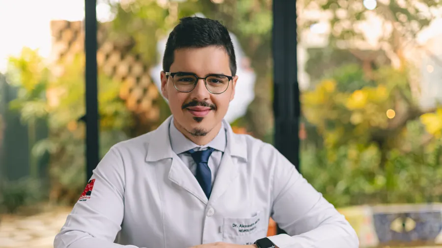
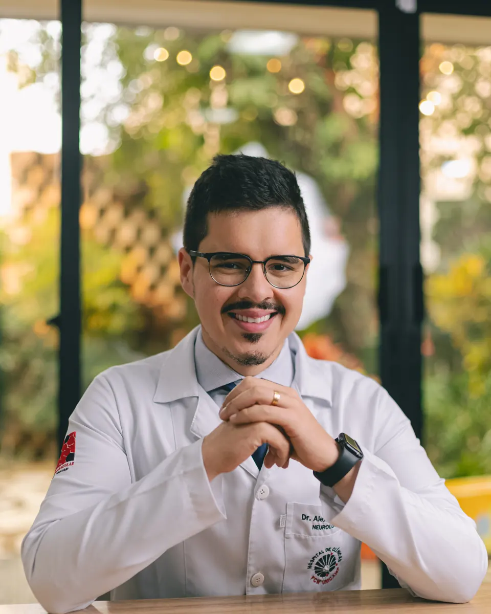
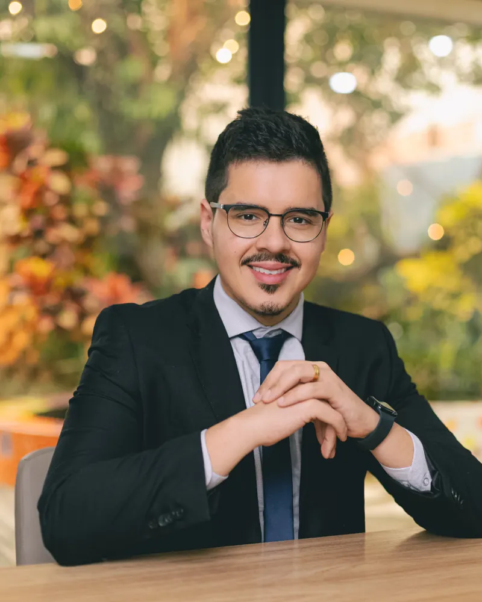

Presencial
Em Campinas, nas clínicas Livance e Salève, com consulta personalizada e retorno incluso.
Retorno inclusoConsultas presenciais, por vídeo ou em domicílio com o Dr. Alexandre Motta. Tempo para ouvir, exame cuidadoso e explicação clara de cada passo do tratamento.

Avaliação, diagnóstico e acompanhamento de sintomas e doenças neurológicas em adultos.
Identificar o tipo de dor e montar um plano para reduzir as crises.
Investigar a causa e tratar de forma direcionada.
Avaliação cognitiva e orientação para paciente e família.
Investigação de nervos e músculos.
Avaliação das causas e orientação de tratamento.
Investigação de crises e ajuste do tratamento.
Acompanhamento após o AVC e controle de fatores de risco.
Diagnóstico e tratamento para preservar a autonomia.
Diagnóstico e acompanhamento.
A consulta pode acontecer no consultório, por vídeo ou na sua casa. A equipe ajuda a escolher a melhor opção para o seu caso.

Em Campinas, nas clínicas Livance e Salève, com consulta personalizada e retorno incluso.
Retorno incluso
Pelo WhatsApp ou Google Meet, em horário marcado, para encurtar distâncias e encaixar na sua rotina.
WhatsApp ou Google Meet
Visitas em Campinas e região para quem tem dificuldade de deslocamento, idosos ou pessoas acamadas.
Campinas e região
Sou médico neurologista, com residência em Neurologia pela UNICAMP e subespecialização em Neurofisiologia, com ênfase em doenças neuromusculares e neurogenéticas.
Hoje sou médico assistente e chefe do Ambulatório de Neuroinfectologia da UNICAMP, membro titular da Academia Brasileira de Neurologia e faço doutorado em Fisiopatologia Médica, pesquisando doenças neuromusculares. Esse vínculo com o ensino e a pesquisa me mantém atualizado sobre os tratamentos mais recentes.
No consultório, meu compromisso é que você entenda sua condição e participe das decisões sobre o seu tratamento. Cada paciente tem sua história, seus limites e seu ritmo, e é assim que eu procuro cuidar de cada um.
Além da neurologia geral, o Dr. Alexandre se dedica a casos que pedem formação específica.
Foco da subespecialização e da pesquisa de doutorado.
Investigação e acompanhamento de condições hereditárias.
Exame que avalia nervos e músculos, indicado em casos de formigamento, dormência e fraqueza.
Aplicação com indicação neurológica, conforme avaliação.
Residência, subespecialização e trabalho atual como chefe de ambulatório.
A consulta termina com explicação clara e decisões tomadas junto com você.
Atendimento no horário marcado e com tempo para as suas dúvidas.
Reavaliação dentro do prazo combinado na consulta.
Consultório, vídeo ou em casa.
Eletroneuromiografia feita por neurofisiologista.
Não. Você pode agendar diretamente pelo WhatsApp.
Sim. O retorno está incluso dentro do prazo informado na consulta.
A consulta é feita por vídeo, pelo WhatsApp ou Google Meet, em horário marcado. A equipe orienta se o seu caso pode ser avaliado a distância ou se o exame presencial é necessário.
Sim, em Campinas e região. É uma opção para pacientes com mobilidade reduzida, idosos ou pessoas acamadas. Consulte a disponibilidade pelo WhatsApp.
É um exame que avalia o funcionamento dos nervos e músculos. Costuma ser indicado em casos de formigamento, dormência, fraqueza ou suspeita de doença neuromuscular. O médico avalia se você precisa dele.
Exames anteriores, relatórios médicos e a lista dos medicamentos que você usa.
A equipe informa valores, formas de pagamento e como solicitar reembolso ao seu plano pelo WhatsApp.
Perda de força em um lado do corpo, fala enrolada, boca torta ou a pior dor de cabeça da sua vida são sinais de emergência. Procure um pronto-socorro imediatamente ou ligue 192.
Agende sua avaliação com o Dr. Alexandre Motta. A equipe responde pelo WhatsApp e ajuda você a escolher a melhor forma de atendimento.
Agendar consulta pelo WhatsAppAgendar pelo WhatsApp(19) 99819-2333 · Presencial, por vídeo ou em domicílio